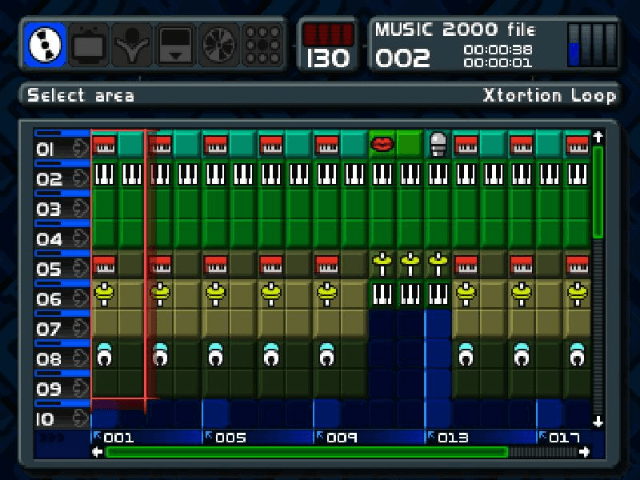
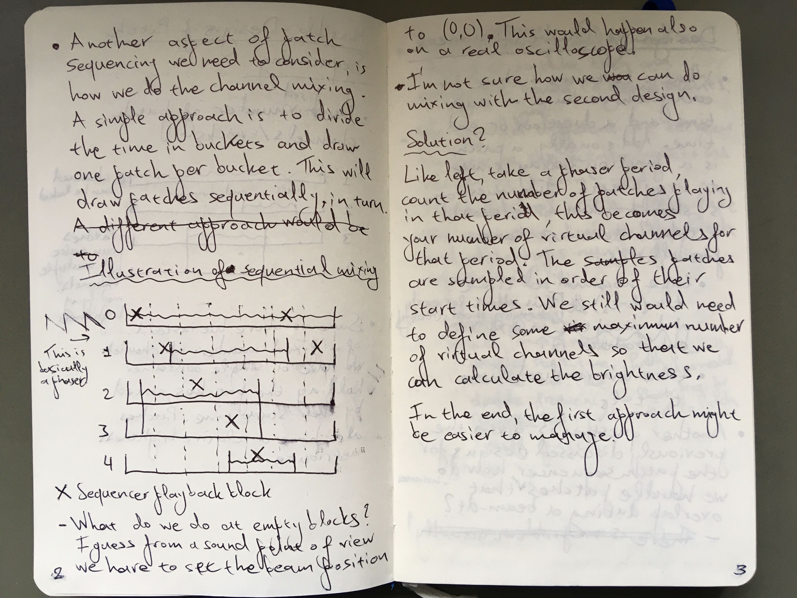
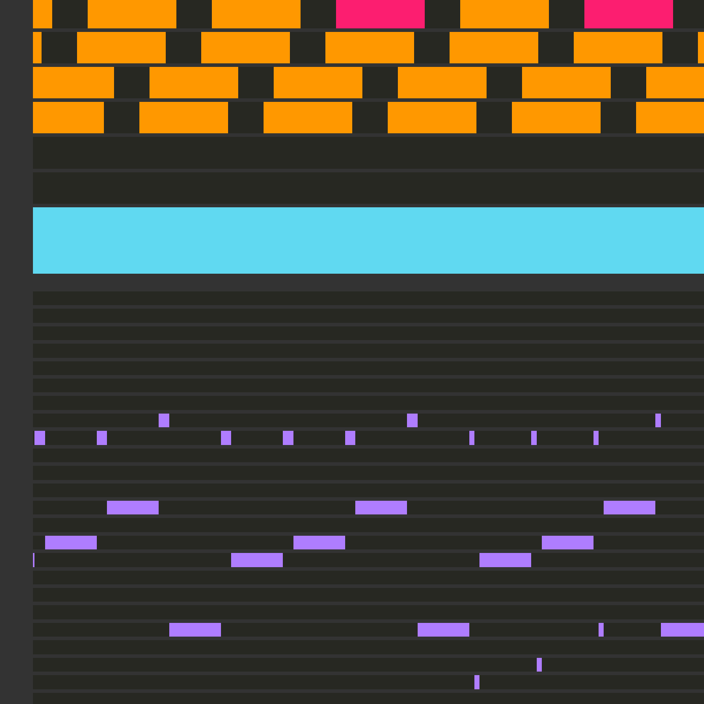

Building a Sequencer and a Level Editor for Vectron
Vectron is unique in the way audio, graphics, and gameplay are intertwined. This feature of Vectron meant I had to build a special audio sequencer that also worked as a level editor.
The central concept I used to drive audio and gameplay is that of a "patch". A patch in the context of digital audio workstations (DAW) is a single setting or group of settings that are exported out of a software instrument that can be imported and used with similar software. In the example below you see how a music sequencer looks like. On the left you have different slots or channels, and in each channel we can play different samples, with the bottom indicating the time progression. The interesting part is that these "samples" can be anything, from audio samples, to audio effects, such as reverb, which don't themselves produce audio, but modify the sound.  Similarly, in the context of Vectron, I defined a "patch" to be an audio producing entity, but also introduced so-called patch transforms which modify patches. Instances of these patches and transforms can be sequenced by giving them a certain start and end time in which they are active. I will describe patches and patch transforms in more detail later.
While in a traditional DAW, the channels are mixed together, in case of Vectron, we can only have one channel because we only have one beam 1. If we would mix different channels, the shapes we are trying to display would also be averaged together, producing an ugly mess. Instead, to be able to keep the shapes we have to "average" the channels by playing them in sequence really fast. This unfortunately alters the sound of each channel but we have to live with it. Below you can see in my design notes how I came up with the idea for the sequencer.  I describe a system with 5 channels divided in time "buckets" where the sequencer plays a time back sequentially from each channel. This was still in the exploration phase so there is some discussion on other solutions, and possible issues.
Functional Reactive Audio Synthesis
Having given a short overview of the patch sequencing used in Vectron, let's take a deep dive into the actual design choices I made for patches and patch transforms. The fundamental design choice I took was that a patch is in essence a 2D parametric equation, where the parameter is taken to be time. For example, a circle is described by \((x, y) = (\cos2\pi t, \sin2\pi t)\). For simplicity, I chose the parameter to be between 0 and 1. Things become interesting when you consider the parametric equations to be 2D vectors and start doing math and vector operations with them. For example, adding a constant parametric equation, e.g. \((x, y) = (a, b)\) to the parametric equation of the circle will translate it by the amount \((a, b)\), while multiplying will result in an ellipse with radii \(a, b\).
These concepts were succinctly described in the context of computer animations in the seminal ICFP 97 paper Functional Reactive Animation by Conal Elliott and Paul Hudak, and these concepts were later recognized as a programming paradigm known as Functional Reactive Programming (FRP). Funnily, I came across an application of FRP in composing financial contracts when I was working as a quant developer by the well known Simon Peyton Jones, a major contributor of the Haskell language. FRP borrows machinery from functional programming for manipulating time varying behaviors and events. For example, a well known functional programming tool is known as map and applies an ordinary function to the elements of a collection, in this case, the coordinates of the patch. If for example we have a patch \((a,b)\), we can map the sine function onto it, which will result in \((\sin a, \sin b)\). FRP allows expressiveness with just a few elements, building a kind of vocabulary.
All this sounds very theoretical, so let's get into the nitty gritty details. A patch is simply defined as,
struct Patch { uint8_t type; void* userdata; void (*call)( void* userdata, double t, double f, double* x, double* y ); };
By adding a type field and a void* userdata we can easily create a discriminated union (also known as variant). The call field is a function taking the userdata along with the parameter t as well as a frequency parameter, f, which I have not yet discussed, and returns a point (x, y). As I'll discuss later, notes can be played in the patch sequencer by adding frequency intervals (i.e. setting the frequency for a time interval) to the sequence. Being able to change the frequency of each patch instance, though, gives us more flexibility. This frequency parameter is equivalent to \(g(t, f) = h(t f)\). In the end, only the following 13 patch types are needed to express most operations:
enum PatchType: uint8_t { PT_LIFT1, PT_LIFT2, PT_FREQUENCY, PT_TIME, PT_POINT, PT_POINT_OBS, PT_RANDOM, PT_SEQ, PT_SELECT, PT_FLIP, PT_AUDIO, PT_FMUL, PT_FSET, };
PT_LIFT1 & 2 are so-called lifting operators. PT_LIFT1 takes two functions,
typedef double (*DoubleFunc1)(double);
which each operate on x and y, producing a new patch, allowing us to implement unary operations on patches. We can for example implement the absolute value as,
Patch pt_fabs(Patch p) { return pt_lift1(fabs, p); }
PT_LIFT2, on the other hand, takes two functions,
typedef double (*DoubleFunc2)(double, double);
along with two patches, and each function takes a x and y from each patch respectively. This allows us to also implement binary operations, such as addition between patches.
PT_FREQUENCY and PT_TIME set the coordinates x and y equal to the frequency and time respectively. PT_POINT represents a fixed point, PT_RANDOM is a point with randomly changing position, PT_SEQ takes a number of patches and calls them sequentially based on time/frequency (this allows us to build e.g. polygons), PT_FLIP swaps the patch x and y, and PT_AUDIO is a sampled wav audio. PT_FMUL and PT_FSET are special in that they operate on the frequency part of the patch, with PT_FMUL multiplying the frequency by a constant, while PT_FSET sets the frequency to the supplied constant. Finally, I left PT_POINT_OBS, and PT_SELECT as last because they take as input "observables", basically a new type bound to an observable, e.g. a pointer to a changing value, with PT_POINT_OBS setting the patch coordinates to be equal to the observable, and PT_SELECT being the equivalent of an if/else statement based on the observable value.
Finally, even though it's strictly redundant, I also introduced patch transforms, which are very similar to simple patches, but instead of generating a point, they modify one, i.e. \((x',y') = h(t, f, x, y)\). Why I say it's redundant is because you can either pass the point that will be modified as an observable, or define a patch to be equivalent to the definition of a patch transform. Nonetheless, it seemed simpler for Vectron to just introduce a new type. These patch transforms act on the specified sequencer channel; the patch for that channel is first applied giving a beam point (x, y), and this is in turn passed to the patch transform to produce the final point. In the end I only implemented scaling, translation, and if/else based on an observable value.
The Design of the Patch Sequencer
Implementing the patch sequencer was not trivial. As I mentioned earlier, the sequencer uses a number of channels/tracks, which can also be seen as sprites in retro consoles like the NES. There is a limit to the number of sprites the NES can display on the screen, and if you want to display more sprites you will get flicker because not all sprites can be displayed at the same time. In the design of the patch sequencer, which you can see below, I ended up fixing the number of channels to 8, which felt reasonable enough to get enough action on the screen.
struct PatchSequencer { double time; double frequency; double interval_advancement; FrequencyInterval* frequency_intervals; size_t size_frequency_intervals; size_t num_frequency_intervals; size_t current_fid; size_t size_patch_instances[PS_NUM_CHANNELS]; size_t num_patch_instances[PS_NUM_CHANNELS]; size_t patch_channel_position[PS_NUM_CHANNELS]; PatchInstance* patch_instances[PS_NUM_CHANNELS]; size_t size_transform_instances[PS_NUM_CHANNELS]; size_t num_transform_instances[PS_NUM_CHANNELS]; size_t transform_channel_position[PS_NUM_CHANNELS]; PatchTransformInstance* transform_instances[PS_NUM_CHANNELS]; };
Keep in mind, though, that 2 of the channels are dedicated to the player patch -- a patch can take up multiple channels, which increases the overall brightness of that patch on screen. The channels are the main complication I had to tackle when implementing the patch sequencer.
Generally, in a game loop a frame is rendered and the simulated components (e.g. physics, AI, etc.) are advanced by an amount equivalent to the frame time. In Vectron, I followed the same approach, advancing the beam simulation by an amount equal to the frame time. In a previous post, I explained that in my implementation of the beam renderer, I draw a fixed number of (line) segments, N, each frame, and each segment is assumed to take a fraction of the total time, dt = t / N, where t is the frame time. Finally, the coordinates of each beam segment are calculated by advancing the patch sequencer by dt. The steps can be summarized in (python-like) pseudocode as follows:
dt = t / N beam_points = [last_point] for i in range(N): next_xy = advance_patch_sequencer(dt) beam_points.append(next_xy)
The trickiest part of the simulation is contained in the advance_patch_sequencer function. Here, we first check if we should advance the frequency interval to the next one, then we calculate the channel the sequencer should be in, and check if there are any active patch instances and transforms for that channel. We don't have to look though the whole channel, though; instead, we keep a channel_position variable for each channel, which keeps track of the index of the current active patch instance or transform in the sorted patch instance or transform array, e.g. patch_channel_positions and patch_instances. Calculating the current sequencer channel can be harder than it first appears -- the frequency of the sequencer can change. This is equivalent to finding what position a car is given its starting position and velocity over time. One has to integrate the velocity over time and add the starting position to calculate the current car position. The velocity in our case is the patch sequencer frequency, which is measured in sweeps per second, where during a single sweep the patch sequencer visits all channels once. To make this calculation easier, we keep a running sum of the advancement (measured in sweeps) and update the sum whenever we switch frequency intervals. Then, the current total advancement can be calculated as,
double advancement = interval_advancement + (current_time - current_frequency_interval.start_time) * current_frequency;
and the current channel is then just,
uint64_t sequencer_channel = uint64_t( advancement * PS_NUM_CHANNELS ) % PS_NUM_CHANNELS;
In principle, problems can occur due to accuracy when very long sequences are considered, but that is out of the scope of the game engine.
Gameplay from audio
Below you see a visual representation of what the patch sequencer sees. On the top half the 8 channels of the patch sequencer are represented, with colored blocks representing patch instances, while in the bottom half are the frequency intervals, or notes of this patch sequence.  You might have noticed that the patch instance blocks have different colors. The different colors correspond to different types of patch instances -- for example the cyan one indicates a player patch. What you actually see in the image is part of a stage. A stage in Vectron is defined very similar to a patch sequence, as a collection of patch instances, transforms, and notes, only there is additional gameplay-specific information attached to each patch. When a stage is loaded, there is logic that initializes a patch sequence in the sequencer, and also initializes some structures for house-keeping during gameplay. One of the basic elements of gameplay, for example, are these lines (I call them beat annuli, which is a remnant from the first game concept) that come towards you, which you have to reflect back by pushing the fire button, while they are within the player square. While loading the stage, these are added to a queue, and the game logic checks if either the player has pushed fire at the right time, or if the window of opportunity was missed. In the former case, the patch of the patch instance corresponding to the beat annulus gets replace with one that travels backwards. In the latter case, a patch transform is added to the sequence which disturbs the player "sprite" to indicate that they lost a live. The patch sequence is thus dynamic, and gets modified based on the player actions.
Conclusion
Due to the way Vectron was designed to use audio as the driver of both the graphics and gameplay, I had to come up with a unique solution for the game engine and the level design. I had to build an audio sequencer where each patch in the sequence is not only producing or modifying sound, but also potentially being a gameplay element. Building this sequencer while ensuring that gameplay, audio, and graphics are properly synchronized was challenging, but ultimately the solution seems obvious when you know it. I love how games can teach you many skills, but building games can teach you a very different set of skills. Every game presents its own set of challenges which you have to overcome to build the version of the game you envisioned, but every time you overcome these challenges you become a bit wiser.
-
You might think, why not introduce more beams, perhaps with different colors, and I did think about it before, but decided to keep the game/engine simple. Also, having multiple beams breaks the duality of the audio and graphical representation. ↩